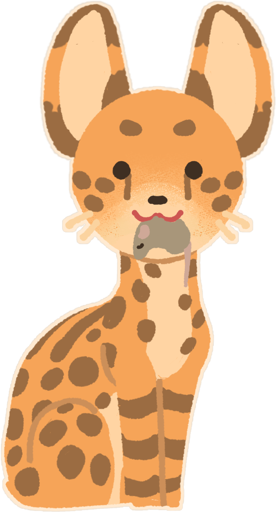

Сервалы - это сумеречные животные; пик их охотничьей активности приходится на 4—5 часов утра и 10—11 часов вечера. Их основной добычей становятся грызуны, зайцы,мелкие антилопы, а также фламинго и другие птицы. Охотятся сервалы и на змей, в том числе ядовитых. Крупные уши и прекрасно развитый слух помогают им выслеживать грызунов и ящериц, а длинные конечности облегчают продвижение в высокой траве саванн и помогают смотреть поверх неё.

Способ охоты сервала схож с охотничьей тактикой другого кошачьего — каракала. Охотится сервал подкрадываясь в высокой траве. Грызунов сервал часто выкапывает, разрывая норы, а за древесными даманами забирается на деревья. Змею сервал старается оглушить ударами лап. Умеет плавать.
